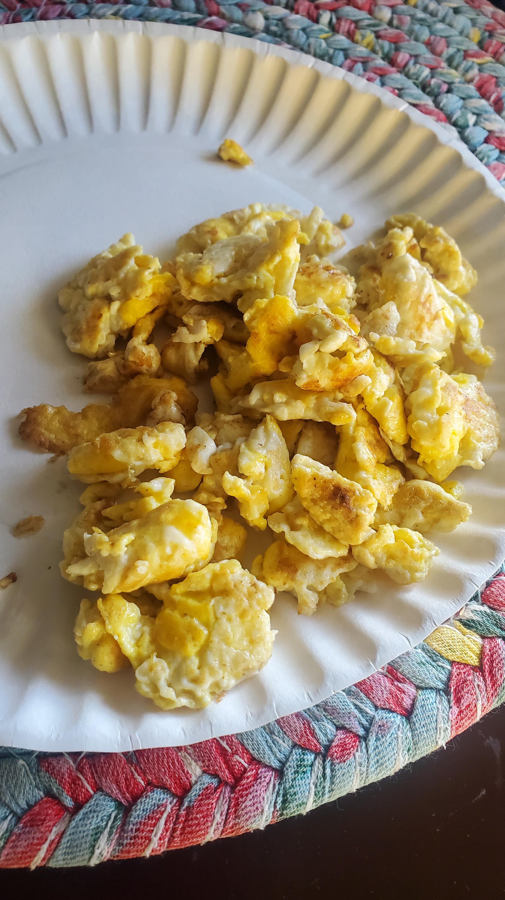

Questionable Eggs

Description
The backbone of any great meal is the mighty egg. Who cares where you found it? Meemaw taught me that eggs cannot go bad because they are encased in an egg shell, protecting them.
Try them with toast!
Ingredients
- Eggs you aren't too sure about
- Salt
- Water
Preparation
- Crack eggs into mixing bowl with salt
- Stir vigorously until consistency is smooth, and add a small handful of salt. (if solids are present, dont worry! they will melt away during the cooking process, maybe!)
- Add stirred and salted eggs to cooking pan on medium heat. Add some more salt. If any odor is detected, pour water over the eggs until odor is trapped under the water, and add an additional teaspoon of salt for taste
- Cook until water is evaporated and eggs are a dark brown color, stirring occasionally
- Remove from heat and plate, adding salt to taste. Best enjoyed with Toast and water